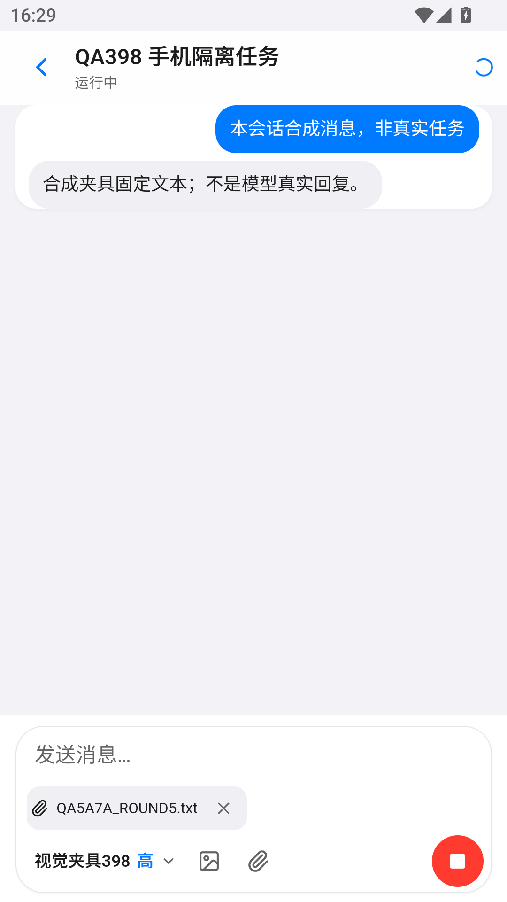
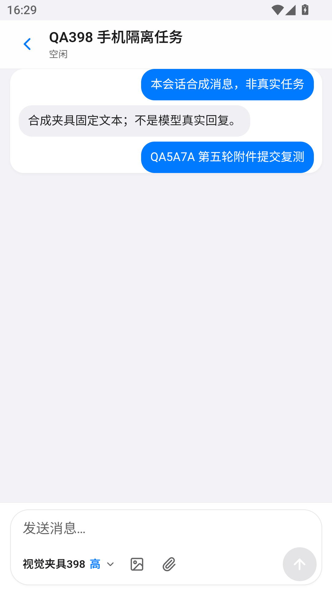

结论
| 项 | 结果 |
|---|---|
| 独立 CI（Node 24/22） | 389/389 pass，fail 0，cancelled 0 |
| 新修复专项 | 49/49 |
| 首轮/档位/迁移专项 | 13/13 |
| 限制① 短超时后同进程重选 | 通过 |
| 限制② PI 真实两轮 | 受阻，根因未定 |
| 历史分页 80→160→205 | 9/9 断言 |
限制②：宿主控制路径定位
| 探针 | 结果 |
|---|---|
| pipe server（正确帧格式） | 有应答：unsupported method: plugin.list |
| turnloom/host/invoke → plugin/list | Plugin host process is no longer active (8 ms) |
| turnloom/host/invoke → skill/list | Plugin host process is no longer active (1 ms) |
| 原 host-control-probe.json | 已作废（协议错误，见 INVALID-hostprobe-exclusion.json） |
原生截图（1080×1920）
1080×1920 · 99189 B · ab74a843fee0141a…
1080×1920 · 99570 B · ed343002940c1042…
1080×1920 · 102805 B · 68f323e0cfe40e02…1080×1920 · 102385 B · f86aa5a1c79680de…